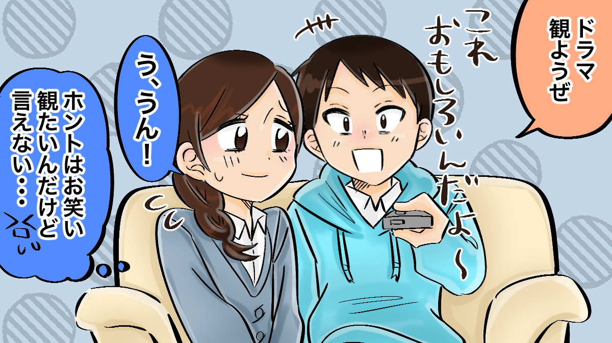

恋愛をする時に嫌われるのが怖いと感じる女性には、対人関係や好きな人と関わる時の心理状態に共通点があるものです。
過去の経験や考え方が原因で、いつも「嫌われないかな」と不安になるから、恋愛が上手くいかないと悩んでいたり、彼氏に対して恐れてしまうのは自分だけなのか気になっていたりするあなたは、この記事を読み進める事で、不必要に恐れない心を育てる事が出来ます。
b女性が、好きな人から嫌われるのが怖いと感じる心理や場面、心の育て方について詳しくお伝えしていきますので、不安に負けず恋愛を楽しめるように女性としての魅力を高めていきましょう。
嫌われる事に対して恐怖心を持たない女性とあなた自身の何が違うのかを比べて、「やってみよう」と思える事を見つけて、一つづつ身につけていってくださいね。
不安を感じてしまう女性は、相手を喜ばせる事が恋愛だと思い込んでいる状態です。
好きな人に対する意識というものが、そもそも偏っており、「お互いに幸せになろう」「助け合える関係になりたい」というものではなく、「喜んでもらえなければ彼女の意味がない」と考えています。
そのため、自己犠牲を払ってでも彼のために行動する事が当然であり、自分の事はいつでも後回しにしてしまうのです。
相手を喜ばせることが出来なければ、恋人としての価値はないと考えているので、好きな人からの判断はとても重要なものとなります。
「私の行動は正しいのかな」「ちゃんと喜んでくれているかな」といつも顔色を見続けることになるわけです。
喜んでくれることを前提に動いているので、自分が幸せかどうかを振り返る余裕はありません。
嫌われてしまえば、即、別れに値すると思い込んでいるので、彼が喜んでくれるかどうかは、この女性に対して恋愛の死活問題です。
最初は、ボランティア精神で行っていた優しさも、評価という見返りを求めるようになってしまっています。